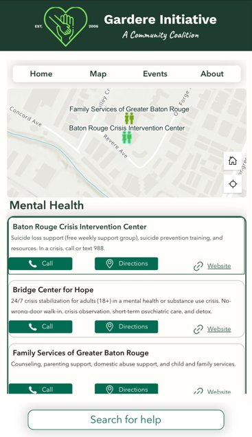
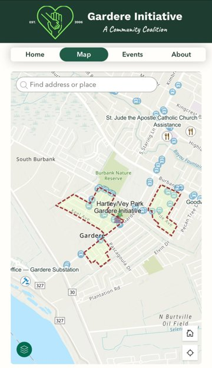
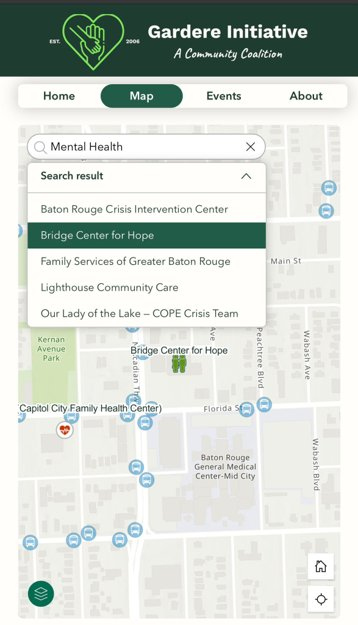
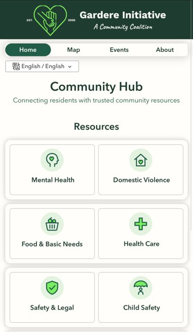
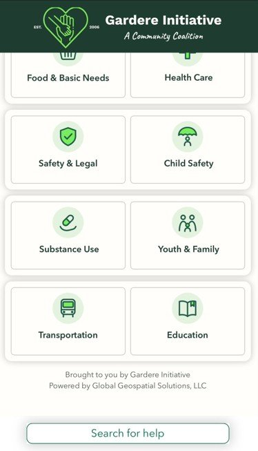
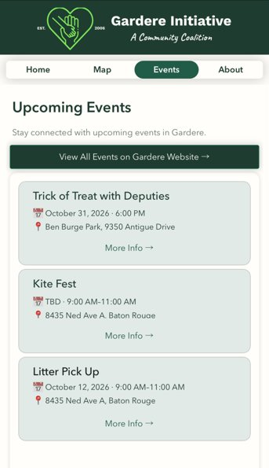
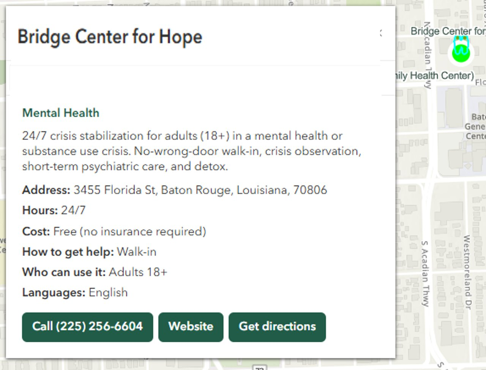

EXPERIENCE BUILDER APP
Community Hub App
Problem: a Baton Rouge neighborhood needed one public place to find community resources and report local issues.
Role: built and deployed the Experience Builder app with an integrated Survey123 reporting survey.
Outcome: 4 operational layers and 50+ mapped community resources live.
App screenshots






